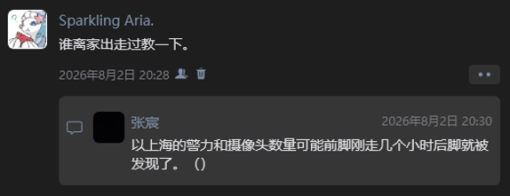
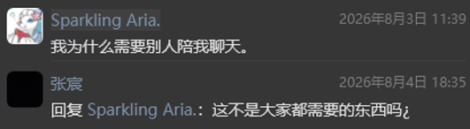

← 返回首页
03睡一下自己八月二三四号的朋友圈
8/6
标题打错了，水一下。
第一天：
①0岁和18岁之间真的是很神奇的两个分界线。让我们先把七八十岁的平均寿命忘记。在这之间是绝对的二比一。出生是两票的全票通过。带有基因的随机性。无需投票。上海人养得好好尤其有爷爷奶奶在张江真的很幸福。大家都是差不多那个时候有自主意识。恭喜啊。我也有。可是那是白日梦诶。（1哭）十八岁之后真的好难。。我首先要适应自己专属的手机。我还想要板子或者电脑。会有很多小功能比如备忘录和录音那样可以写歌录歌。适应不会被偷看的微信，不用说一句删一句，不用把爸妈禁止的人删掉（2哭），还能看视频号。适应不与父亲共享的相册，我可以堆积照片，不用清空。可以培养很多兴趣爱好吗？我现在第一步是音乐，可是我板子很快被收这也不行，这也要等着。画画？初中我就想画画，看别人随手画真好，可是我画不好，因为我看着什么画呢，看着空气吗，又用什么设备？怎么都那么俗，还有我想弄音乐但没有空学乐理，我打伴奏都是用感觉瞎做我还觉得自己老牛逼了。有没有小众一点酷一点的，魔方，蝴蝶刀，各种手极，摆脱能不能安装一个消音器别被我妈听见？（3哭）我知道你们更惨需要自己攒钱，我就不同了，我想买什么我妈都给我买，只要（4哭）是她认可的东西（5哭）。“你要什么妈妈给你买（6哭）。好了不说了。管理钱财也挺累的。不想花钱用妈妈的卡。学习是不是很重要啊？对，是很重要，可是考进交复又有这么重要？就像我他妈只考了进才，不也活得好好的，我本来还想冲四校呢。都是上天的安排，我还不用搬家呢。四校活得累死了，还好考差了。补课补就补了挺好的，因为上课了我就不会乱想东西是真的投入学习，还可以让妈妈稍微关心我一下。学习估计不用适应。如果我有了安全的微信我肯定改掉删除联系人的习惯（7哭），肯定让微信爆炸，不开免打扰了，它提示我有好几百条消息，我也不嫌多。除了微信还有好多软件同理，我也不用删哔站投稿，收藏，历史记录。软件也要下载好多好多，让内存不够。看番是个什么东西，抱歉我只看宝可梦，之前我前七季都看了两遍倒背如流，1025图鉴我都能眼熟，猜盐熟练，小学还背了三四百个图鉴。游戏有啥，我以后可以不用审批给自己下一个游戏吗？有没有联机匹配游戏，不要单鸡了。或者两个都要。打游戏是一种放松对吧。还有什么二次元我也啥也不知道跟人没有话题。算了。小说啥的也没有。浏览器也被封。要是我有那么那么多爱好，可以填满我生活的空缺，是不是挺好。我估计很难改掉清空一切的习惯。我习惯把书桌收拾得特别干净。周围什么东西也没有。因为我自己就很空，喜欢肃清一切。这个人不回我消息像死人就删。一旦让我心情不好就删。删了也没有办法加回来。被好友批评过。是否我的书桌能大一点，我还希望它乱一点，别人来我就说，我这书桌乱得一批，都没地方放东西。抽屉也可以放大量私人物品而不是只有文具。各种小玩意伸手就有，摸把刀玩一会儿，拿个什么胶水拿个纸做做手工。各种小东西增添一点乐趣。会不会形成记日记的习惯？我对初中的人和事已尽数忘记，近似于白活。每天应该总会有好事的对吧？（8哭）可以是跟谁讲了什么话，感觉怎么样，等等，不要像之前一样被发现被责怪就不敢再写了。日记不就是写好事坏事都可以吗？我可不可以主动分享日记，而不是处处提防。要是跟我爸妈关系好我会主动出示，并且讲述校园生活。之前日记写到几个敏感人物就被批评。敏感人物敏感个jb要别人管吗，管我的必经之路是偷看我的隐私啊！什么时候我不怕别人看我微信我就是正常了。还有房门开我就回急匆匆地激灵一下然后把所有东西合上，尽管是作业。之前我做了绝顶的错事，现在走不出这段阴霾。男女之间只有早恋对。早恋不会有结果对。我本身是好小孩就是容易受别人影响对，所以要防止我跟不好的人在一起对。好对，不好对。别人都怎么怎么样对。三观不正对。为了一个外人家庭支离破碎对。我被毁了别人在看笑话对。心理医生是证明父母有病对，我被别人洗脑了对，反正这洗脑程度大于你们快十七年对优秀正确教育对。这句话说重了，问题是近几年才有的。对。自家已经分裂别人家爹地妈咪亲热对。只要父母意念合一家庭就会和睦对。我是自愿删掉的对。因为我删掉了才给我买游戏本来是不会有游戏玩的对。都是赏赐对，那还是别赏我肉体赐我灵魂，也不要安装（9哭）一个反叛系统反正是炸药。给爸妈开免打扰同学不开不对，发朋友圈不给父母看也不对，那下次你们谁偷看的时候就可以看到了反正我是不会删的对。你们说我发疯那就发吧，还说你们一个暑假因为这件事没有睡过一个好觉，我很理解你们教育引导我，但是当你们发现（10哭）我没救了就他妈别救了啊。为什么就因为我是儿子是未成年。我成年了一定学会交通工具作为上海本地人熟悉上海的所有地铁和常用公交车，不要这个他妈“安全定位”来监视我，之前我去别人家里我爸就跟定位开车把我直接撵回去，为此难受了半个月。我还要学会合理用钱。还要学会洗衣服整理衣服用电器，要学会怎么一个人住宿和旅游，要学会结婚吗这个别了，我不配行了吧，说“等你当了父亲就知道了”抱歉我一点都不想知道。曾经跟母亲4小时的不眠长谈让母亲听到我的心声的同时加剧了她的憎恨后来这个人就被迫删除。不知道他还能不能看到这段。家长孩子未必要如同辈一般亲密但不能为真理打起来对吧，还是有血缘关系的。之前有人说祝我早日逃离原生家庭，这话说重了，因为我的排序是改变调节为先，在自杀吗，最后才是逃离原生家庭。我学习适应电子设备数字社会和了解当今风云局势都会很难。我不敢逃离因为我心本无家可归。最后我觉得上海人应该有上海人的过法。我离这个世界有多远，在家里就被埋得多深。所以长到18岁是好是坏？哦我现在要重新想起我的总寿命是很长的。我的总寿命，真的很长吗。会撑到自然死亡吗。。我之前还想过在自己歌的mv 里录制自杀过程然后拜托别人帮我发出去并且别给我妈看到。不过我要是真死了我的以为同学及其家庭估计有生命危险了。不过他好像不怕。原来我才是最怕担当的。我会撑到寿命耗尽吗？仍未可知。我的朋友们是多么宝贵啊。。我一觉醒来旁边死了个人会怎么样？如果别人能发现我那啥了就不好了。估计现在最好是被雷劈。没人知道怎么死的。也不算自杀了。父母会为我而死吗？估计不会但是一定会散，在老张江的庞大家庭中留下丑闻。老师同学什么时候知道我死了。应该很难，我不回你们消息你们应该习惯只是我微信没了，谁知道我死没死，就跟睡觉睡死过去了一样。世界美好，未来希望，我都坚信不疑，可是我在当下快活不过去了。。救救孩子。。。
②全剧终。别担心我。
好想吃吃苦啊。
小孩是美味的。
终终终说个屁。
我做道选择题。
判断题已经答错。
这张卷子已经不及格。
我做选择题但是不签名。
我已经没有办法匿名答题。
这份卷子限时作答吗。我急了。
有没有消除记忆的药物我要服用。
各位监考我没有作弊，我只是在答题，好难。
这道题真的好难你们是不是想上手帮我做。
我清楚你们四个人有四种解题思路。凭了解。
再没人抢答时间就真的差不多了。答案要写下去吗。
这次我和三年前一样错得离谱。中间是对了。
自己做出来的题没人自我质疑。做不出来才慌。
判断题我不知道我错飞，选择题蒙一个吗。
蒙一个。我赌你们说什么都是对的。帮我作答。
我是不是在卖萌让你们哄我。其实我是自己想过的。
我要把这张卷子撕了吗。那就是把我撕了。
我真的相信未来是光明的。应该非抑郁。
我倒希望抑郁了这样爸妈就会去看病了。
你们不用哄我了。我偷偷出去一下别担心我。
我还想过把学习手机埋在我自己也记不得的地方。
这样可以销毁安全定位。这个定位不让我受保护。
爱恨情仇喜怒哀乐七情六欲了就了了。
最后送你们每人一个飞吻。爸妈也包含在内。辛苦。
该怎么结尾。祝大家长寿。幸福。还有独立。
其实做不到独立的只有我而已应该。
我来填涂这道选择题。这很难我觉得。羁绊多。
你们都不是我朋友不认识我。我要删除一切。
还有我的生日在九月四号。我年龄很大吧。
今年我将十七岁了，高考完我就有手机了。
这个张宸之前叫你给我画一张。偏不画。
不过我的头像真可爱吧。都给我保存。
这个西狮海壬就是我。没错。
张桌饭我始终坚信你是绝对正确的。
你咋说我我都信。真的我很信任你。
张宸对不起我跟你绝交好久。
之前还用新学的八极小缠把你撂倒。
我问张倬凡这个吊不吊他说我挺帅。
张倬凡你体格太瘦弱。你的肘很利。
那个摊膀伏你还记得吗。你就太瘦。
李泽行谢谢你指点。你对未来看得很清。
烦你好几天要做音乐了，我还没完成。
你的未来一定很好。你俩一起干能成。
外挂一个乔泽昊。我们是交复双码。
走到哪里都可以进学校打球。好。
你也住张江真是太好了。打了好多次球。
你有一种仙气。自成一派我行我素。好。
张宸我们见了三次。我感到我不断在烦你。
你怎么会觉得不要紧呢，我简直是个疯子。
好朋友啊都是好朋友。说完了。
没电了我该出发了。
去哪儿呢。不知道。
大家再见。
哦哦。
对。
。
③

④来个清醒的人剖析一下我的错误让我心安理得地去世。其实我感觉我犯的错像看片。早晚的事情但是不能放着不管。然而我的父母在知道并且试图管治我无果之后为什么要坚持。甚至暴力。就像你软硬兼施地跟一个人说你要戒色。这是不可能的啊。难道不是自己想戒就戒，然后戒掉的概率本就很小吗。我恰没有那个自控力。爱不爱的维度上没有问题，他们是爱我的肯定，就是爸妈为啥管这么多啊？然后有些东西没办法和他们这个年龄的人解释。唉。。
⑤将死的时候还得考虑别人怎么想。我什么时候变得这样。我真的将死吗我感觉不到。我失去了感官好像。我现在不会哭也不会笑了。我收集一下我身上死人的特征吧。（询问豆包中）（有三面截图关于将死之人的描述）全沾。已经持续半个月以上了。难道死人验证通过了？
⑥把自杀说成结束生命让我有点悲观了。不过自杀就是自杀，把自己杀了，哇塞好爽。就当我生命总共就未成年。我感觉我不会成年。我经历那么多是创伤吗。养得好吗。
⑦各种热线拨打都接不通。
⑧这个张宸不哄我就算了。说话那么冰冷。是不是每次都觉得自己特别有点子特别幽默？
⑨续集。很喜欢张宸的一句话。
我确实让警察叔叔给抓到了。
先是父亲来了。警察。母亲。
都来了。让我回去。不到11点。
看来还是禁手机限制了想象力。
甚至我爷爷奶奶都知道了。
明天还得回张江住几天。
这件事情真的闹大了。我没长大。
上次出走被母亲抓回。
我就提前留了一手暗示。
说把手机埋个地方，定位找不到。
这次我也放了个地方。
然后我想高温给我弄昏迷。
后来实在睡不着就逛世纪汇。
十点关门。我犹豫了一下还是出来。
被关里面就肯定要警察。不敢。
出来打电话到一半老爸来了。草。
（讲话）哎等一下我爸来了。（挂掉）
最后老爸让我回家说。
实际上我讨厌回家说。
家庭权力决定了一切。
两人意念合一我啥也不是。
实则我在自己非理性的做法里面。
疯了吗。也许我只是陷入了昏迷。
你说我醒过来了吗。也并没有。
我只是阴差阳错捡回一条命。
我觉得再担心也不至于叫警察。
警察人挺好的。还开导我。
一开导我就觉得是问题儿童。
没什么认知。也并没有长大。
我又想起来之前提出心理医生。
我感觉这是一个好办法且公平。
可是被说是张宸的阴谋诡计。
并且彻底被别人家看笑话。
于是说，要看你自己去看吧，
我们觉得没有问题。
你本身也没有问题。
只是受了别人影响。
我十分气愤无力。
现在警察来了亦如此。
更兼父亲约了周末的心理医生。
母亲说这回真要看了。多么讽刺。
这又是哪看来的阴谋诡计。
我要想知道也该翻他们微信。
也有可能是他们自认为相想通了。
其实这个故事或者梦里没有人类。
所有人都会觉得我可笑。
也大概率觉得父母同样。
那看一家笑话，见笑了。
说这个不适合发，没错。
只是我已经孤独到极致。
家里面，结果不会变的。
自由，发泄，都被掐了。
该死总该。我要长眠了。
这个世界它真的美好吗。
⑩得改掉寻找情绪垃圾桶的毛病。
如果不是命中注定地相遇认识了。
我不知道我这种78谁会当个朋友。
在傻逼唐必舔狗精神病人间徘徊。
不聊天了。好招笑。
还在安慰我的人，
你们牛逼大了。
万分感谢。
第二天：
①一早醒来特别无力空虚，开始做最讨厌的事情那就是刷视频。给我推了好多人际关系的内容，我一个个点进去看，说的完完全全就是我。评论区里的分享亦如哭诉和温柔的开导，十分感动，更显无力。我现在对世界无疑充满着恨。我从小缺爱吗当然不是。我们一家三口持同样的三观，同样看问题的态度。我就如同在他们的温床里，时刻保持所谓“正确”。可是身边的人都是“错误”吗，我又在“犯错”吗。我不能封闭，我必须看到外界，和我同龄的别人是怎么样的？我又在干什么？初高中都发生的问题是，在社交中，我就像个“文盲”，语言不通，讲话不会讲，不会恰当处关系，没有手段。出去跟同学玩都是让同学帮我付钱，然后我妈转给他。没有交通，都是我妈给我打车。我好像什么也没学会！直到现在我最不会的还是正常跟人讲话。我现在算是赤子之心吗。我感觉像是别人在哄我。宝宝你别死。我说话好反常我刚感觉到。我只有我们家怎么怎么样，没有找到同龄人或者是同校人同伴人的平均数。所以我根本不会处朋友啊。我交朋友就像卖萌，因为我说一套婴儿语，真实诚恳，情感剧烈，不顾及他人感受，只造成不可磨灭的伤害，只是你们特别包容。我什么时候可以学说成人的话。不该说的别说。不要天天跟人发小作文，也不要自己发小作文期待别人也发，更不要别人不回我就当成不要我了。私密的事情不要事事托出，家丑也不要外扬。我的生活状况，你们都知道的。因为我一说就是无限的字数，好事坏事小事大事，不厌其烦，太被包容，没有人因为我的毛病与我绝交。现在我发朋友圈也是挺讽刺的，反正我忍不住，改不了。我讨厌自己这一点。还有我能不能不要一个人什么也不敢，昨天我都去酷玩空间逛了好几圈了，就是不敢一个人进去玩。也有可能光是站在里面看别人玩都感到无尽的孤独。我孤独吗，很有可能是自己把受不了的人和事一件一件排斥出去。我妈为什么会觉得一些同学很坏，很不好，昨天临走前她又重复了一遍曾经“坏同学”给我的伤害，甚至影响了我的运势。我宁愿不信。我就直接甩门出去了。真的一个人好难受啊。可是我一想到啊爸妈始终不放松要求一步，他们没有与我和解只是担心我作出不好的事情。为什么我们一家不能和解呢。我对未来失去希望了，因为我从来没有习惯一个人，我习惯的家人的陪伴让我伤透了。我也让他们伤透了。两败俱伤。不得不伤，不能他们说什么就是什么，我一定要睁眼看世界的，可是感觉到的只有绝望和无尽的孤独空虚。不当个小孩按部就班地被管，真的好难，要是我早习惯，早融入大部分人类的生活模式，少一点让我觉得是我天生的欠缺的东西，哪怕混一点，父母对我不要事事关心管控，我会不会变正常，不会我倾诉完之后别人回一句“你要干啥”“咋了”，咋了我真不知道咋了，我从小就是这么过的。我真的缺乏太多。投影到人际关系上大概就是太缺乏依靠。特别想每个人兴致勃勃地给我讲一大堆，会不会让我好过点。没有学会孤独。没有学会离别。我的长不大，是能被原谅的吗。。我好不争气好懦弱。我什么时候能拥有正常的生活。就算是“只要我想”就能做出的改变，这十八岁的坎摆在这里让我无法适应。更别说不是心想事成，还得看爸妈同不同意。。我能被原谅吗？我总是被安慰被开导的一方，总是自卑，一直一直恨自己，总是总是说自杀，聊天总像舔狗，总发小作文，学校里表现极度幼稚就像小屁孩。我，我能被原谅吗？这错在我身上但不是我的错。我只好如此辩解。我很想复制你们的生活，你们送我点经验包好不好。我要哭崩了。好多东西都是你们教会我的，我本来会啥呢？啥也不会。让你们听我逼逼想必你们也烦，“你要干啥”，我真不知道我在干啥，好似我从小到大都是这样。爸妈觉得大多数家管理都是这样的，但是你们有手机对不对？手机有各种软件各种功能对不对？自己能自理对不对？军训我学会洗衣服谢谢张倬凡夸奖我。还有好多事情，在现在的环境下我怎么试图学会？我真的比家长还操心。你们不嫌弃我这个傻逼实在是有你们太好了。你们算个屁的我朋友你们在照顾我。是吧你们都会照顾小朋友了，你们将来肯定是好爸妈。对。而且为什么别人家的父母总比自家的好，好多，好好多啊。我现在看到爸妈脸就烦，我不想见任何人，我想把自己搬空。也许让我学会适应当下年轻人的生活方式，是很难的。什么时候玩的时候能不有负罪感，能放开玩，而不是想几天后如何戒？等等。是不是我太幼稚反衬出你们成熟，跟我聊天感觉你们的认知和辈分比我高大好多。我总是去你们家，因为我家啥也没有，人类都没有，你们那里好温馨啊。你们觉得无聊的生活我已经发现很多好的活动。哪怕是刷手机。我怎么长大，我长不大你们能原谅吗，我再逼逼那么几段小作文，你们会不会认为我疯到无可救药而抛弃我？我还有救吗。。我好难过。天事人为。这好像只是我的荒唐，不是“天将降大任于是人”而必经的历练。就算是，历练的结果不是蜕变，历练的结果只会是养不好的创伤。再怎么循规蹈矩，不是先苦后甜，而是一辈子受困牢笼。不是破茧是自残。折断我的羽翼我还剩什么呢？我有一万件学不会的事情。生火做饭。洗衣烘干。准备第二天的衣服。正常讲话。处理异性。培养“合法”爱好。在社交平台上展示自己。结束容貌焦虑。主动减肥。健身。对自己小时候发出来的东西即使觉得幼稚也不要删掉。不要清空一切。学会乱堆东西。学会熬夜。学会自己出行。学会看小说动漫番。学会客套。学会对对他人的依赖戒断。学会失去和离别。学会自如地玩游戏。学会大方认识信任参加活动和社交不要自己在家那个宝可梦卡牌打了一百多局还不敢到世纪汇道观跟真人打。学会一个人出去吃饭，首先学会点菜，然后招呼服务员。学会管理钱，然后买东西。学会下各种要用的软件，加各种微信企鹅群，跟爱好有关。学会在我这种老年学会新东西，不要觉得什么都是“从小”培养形成的。学会相信自己能改变。明明自己会讲上海话但不跟家人讲，这也要鼓起勇气不怕犯错，要讲。学会分寸感，这个真的很重要，我行事太没有边界了，因为之前不敢想，所以一开始幻想美好日常就天马行空做出很冲动的事情。学会管理日用品，比如我应该注意到什么时候家里没水了。其实我想入坑音游好久了，真的好好玩啊。二次元不想，我只爱我的宝可梦。想要一个充满个人风格兴趣爱好情趣的房间甚至只是一个书桌就可以。还要堆东西。张倬凡你以前家里桌子上有个电脑，抽屉和台面上堆了各种东西，蝴蝶刀，螺丝刀，魔方，各种小东西，小东西都堆在一起，还有沙发可以放球拍，还有钢琴，你说太乱了没地方写字，我好羡慕。李泽行你房间好多猎奇的椅子，你那套音乐设备完整保留，我还可以在你家做音乐，还收藏好多把刀，单手双手刀，还有那个巨大的柜子，还有可以往床上放的电脑，还有高楼城景，我好羡慕。张宸你经常给我拍视频其它地方就不说了，你那个书桌堆了好多书籍，放满东西，各种各样手办，还有画，我问你还说很多是你妈要的喜欢的，还说你画的画你妈觉得很帅，然后你视频号哔站发的什么乱七八糟的，谁不想急头白脸地拥有一套这样的家庭。可恶都是因为你。我对自己家里的情况产生质疑。我特别想能不能像你们一点，首先有个手机，然后可以有隐私，可以堆那么多东西，让我妈都懒得理，我就可以藏歌词什么的，然后说让家人别进来就别进来，然后可以锁门，外面打不开那种。我房间里只有白色和木头颜色，太太太无聊了。我想想，跟我私人爱好相关的，估计只有两把牌子几颗魔方和几把刀，而且平时又用不到，我多么想“随手”就能找事情做。暑假作业写完不应该过好日子吗，我真想好好学点什么技能。谁懂一件件事情都好像都完不成。那我算什么未来算什么成年算什么。高考铃声一响，学习结束。我变成无事可干的废物。我一睁眼看看你们我就对自己充满了绝望和空虚。我已绝望。还没有完美自尽方法。豆包不愿意告诉我。昨天真让我绝望了，还没想好怎么死就被捕了。我是该困难地提前准备成年后的生活还是简单点死。我对自己认知还算清晰吗，我这种不算是抑郁症吧。要是抑郁症就好了一家三口一起去看病。现在去看的话，我是个神经病，然后家长陪同也不会在意。你们愿意原谅我实在长不大吗。承担自由好难。还要学。这是历练还是苦难。活着很好吗。我好脆弱。。。。。
②我想随意离家不受“安全定位”和警察的监视。我想创造很多传送点比如宝可梦道馆，机厅，爱吃的饭店，学校球场，别人家里，等等。总之在家里太痛苦了。每天两张脸。没有安全感。还不如我出去呢。出去死不死再说，如果没人理我我就消失吧。警察发现我最好救不活我。

③不知道为什么看别人身上有伤口会不自觉的脑补出受伤过程然后很心疼。对自己却不会。
④我活些什么。
我能活出什么。
青春的合约，
我握着笔，
可是不肯签订。
这是高利贷，
没有补贴。
物是人飞了。
⑤感觉好多人在看着我劝我别死。
我怕痛。犹豫太久被警察抓了。
别样的想这么多才死不成。
目前觉得我死了没人会跟跳。
大家都有放不下的东西。
朋友都算个屁。都劝我别死。
活着更像死了一样。
还好我表现得够蠢。
没人对我形成依赖。
要是你们要死我会给你们挡刀。
我不知道多少次想靠反作用力弄死自己。
还有通过减小正对受力面积增大压强。
拳打脚踢。我还把脚趾踢烂过。
可是为什么身体会自愈啊。
为什么都不让我安乐地死去。
死要承受巨大生理疼痛吗。
人终有一死或慢性煎熬。
或当机立断眼疾手快。
乐就多活苦就少活。
什么我有没有试图去战胜这种生活。
我军是一个人。战胜要牺牲一个人。
要不是我有情感我早死了。
我还冷静个屁啊。要情感干啥。
再问一遍有没有清空记忆的药物。
我特别想你们好好活着我悄悄死。
但是也不能太悄悄。得提前让你们知道。
我至少证明一下我活过十几年吧。
也许我报复性开心一下会好吗。
不对不对不对我怎么净想好事。
生活给我多段伤害。我来结束暴击。
说太多自杀也就没人信了。
其实我没放弃过我只是怕痛。
等什么时候克服了我就告别你们。
⑥会不会过几个月我又不想死了。
虽然这个概率很小但是有可能。
而且我知道不能做让自己后悔的事情。
是窝囊没死成活到不想死更让人后悔吗。
还是我会后悔与曾经想过去死。
那我曾经想死已经好几次了。
我从来原谅自己想死的想法。
但是不能原谅求死不得而苟活！
而且万一长大只会嘲笑当下的幼稚！
我真的真的真的不想睁眼看世界看人了。
你知道睁眼全是世界的糟糕和我的无力。
感官告诉我我还会饿还会困还会累。
还会痛还会哭还会索取他人的爱惜。
好想推掉一切事物和心理的不好和压力。
寻找一下世界哪里有些美好，或者远途旅行。
可是我这两年只能要么死要么活受罪了。
希望你们拥有很长的寿命和很棒的家庭。
说分给你们寿命我都嫌脏。你们都好好过日子。
第三天：
①空洞地摆烂。我应该干什么。
有的人活着他已经死了。
整个上午都在刷视频。难受。
活成了死人活丢了自己。
我向我爸抱怨，他直接问我要干啥。
真的事事不顺，事事烦心，哭也没用。
我想飞到天上。像一只小鸟。然后摔死在地上。
或许不用飞就可以做到摔死到地上。
②刚刚看了很多自杀视频都快进看完了不敢看。好像我连自杀都是受制的除了跳楼，但是跳楼好像也好难找到适合的地方。现在在上课我要出去，远离我的故乡张江，这个之前还是农村的地方，去上海其它地方，找个高楼，上面坐坐。充电好慢啊，手机和平板都没多少电了，我估计用不了多长时间了。要不电量用完就结束吧。现在出行会不会被拦住，不管了。我给你们每个人抱怨来抱怨去，其实我讲的侧重点不同，因为有些内容我跟这个人讲不想跟另一个人讲。然后你们把各自的拼起来，再加上朋友圈内容，也不知道你们会不会联系我的父母，还是不要吧他们认为我是疯子无法改观，他们对我认知极少。我要出去了，我要带纸巾擦眼泪鼻涕吗，不用了，擦不掉就算数。要不要带水，渴死算数。手机呢，万一谁联系我让我动摇，也白费功夫。我现在出发了，我要离开家庭去远行。我认为父母依然不知道我要自杀。
③昨天打了三个多小时电话我妈说话费不足。让我不要打了用完微信的15分钟就可以了。
④我找到了好多高楼但不知道怎么上去。矮楼上去发现死不掉。我找到了一条极臭极深无比的臭河，我爸要是看到了都不肯从桥旁边下去钻废林下水营救我。摩托车真的乱穿的好多啊，别撞我，一下死不掉。我跟豆包斗智斗勇他终于告诉了我，跳下去我的五脏六腑会碎，会血流成河。那我想要一种看起来只是睡着了，但实际上大脑心脏都不可能重新运转了的方法。我想起张宸之前给我介绍过安乐死，但这国内不让用。这个死法真好啊，还体面点，还有全尸。怎么死呢，我现在只能保证昏迷，不知道怎么彻底死。难道跳楼之前还要学会爬楼？。
⑤妈了个逼几天了我好不容易接通青少年服务，打了半个多小时，对面姐姐老好了，不断鼓励我，结果手机被老爸强制一下子锁屏了，老爸不停打我电话问我什么时候回来。不问生死，那你可以把我尸体带回家。哈哈哈，这帮当父母的除非看聊天记录，怎么会主动发现我想死那么多次。他们儿子不是很坚强吗。哈哈。可笑。
⑥（游历经过略，五个多小时，连续暴走，混迹野地，桥洞暴雨等等。很有趣自由的经历）
【批注】这三天发生的事情，有部分不能播的删减掉了，比较可笑。我可能真得去看心理医生了。你看这篇又恰好一万字，这么一来完篇我就总共写了三万字了。